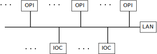
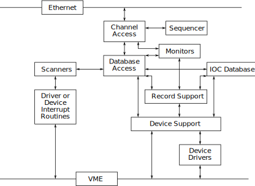

The Experimental Physics and Industrial Control System (EPICS) consists of a set of software components and tools that Application Developers can use to create control systems. The basic components are:
A control system implemented via EPICS has the following physical structure.

The rest of this chapter gives a brief description of EPICS:
The basic attributes of EPICS are:
An IOC contains the following EPICS supplied software components.

Let’s briefly describe the major components of the IOC and how they interact.
The heart of each IOC is a memory resident database together with various memory resident structures describing the contents of the database. EPICS supports a large and extensible set of record types, e.g. ai (Analog Input), ao (Analog Output), etc.
Each record type has a fixed set of fields. Some fields are common to all record types and others are specific to particular record types. Every record has a record name and every field has a field name. The first field of every database record holds the record name, which must be unique across all IOCs that are attached to the same TCP/IP subnet.
Data structures are provided so that the database can be accessed efficiently. Most software components, because they access the database via database access routines, do not need to be aware of these structures.
With the exception of record and device support, all access to the database is via the channel or database access routines. See Chapter 15 for details.
Database scanning is the mechanism for deciding when to process a record. Five types of scanning are possible: Periodic, Event, I/O Event, Passive and Scan Once.
Database access needs no record-type specific knowledge, each record-type provides a set of record support routines that implement all record-specific behavior. Therefore, database access can support any number and type of records. Similarly, record support contains no device specific knowledge, giving each record type the ability to have any number of independent device support modules. If the method of accessing the piece of hardware is more complicated than can be handled by device support, then a device driver can be developed.
Record types not associated with hardware do not have device support or device drivers.
The IOC software is designed so that the database access layer knows nothing about the record support layer other than how to call it. The record support layer in turn knows nothing about its device support layer other than how to call it. Similarly the only thing a device support layer knows about its associated driver is how to call it. This design allows a particular installation and even a particular IOC within an installation to choose a unique set of record types, device types, and drivers. The remainder of the IOC system software is unaffected.
Because an Application Developer can develop record support, device support, and device drivers, these topics are discussed in greater detail in later chapters.
Every record support module must provide a record processing routine to be called by the database scanners. Record processing consists of some combination of the following functions (particular records types may not need all functions):
Channel Access is discussed in the next section.
Database monitors provide a callback mechanism for database value changes. This allows the caller to be notified when database values change without constantly polling the database. A mask can be set to specify value changes, alarm changes, and/or archival changes.
At the present time only Channel Access uses database monitors. No other software should use the database monitors. The monitor routines will not be described because they are of interest only to Channel Access.
Channel Access provides network transparent access to IOC databases. It is based on a client/ server model. Each IOC provides a Channel Access server which is willing to establish communication with an arbitrary number of clients. Channel Access client services are available on both OPIs and IOCs. A client can communicate with an arbitrary number of servers.
The basic Channel Access client services are:
In addition to requesting process variable values, any combination of the following additional information may be requested:
It should be noted that Channel Access does not provide access to database records as records. This is a deliberate design decision. This allows new record types to be added without impacting any software that accesses the database via Channel Access, and it allows a Channel Access client to communicate with multiple IOCs having differing sets of record types.
Channel Access provides an IOC resident server which waits for Channel Access search messages. These are generated when a Channel Access client (for example when an Operator Interface task starts) searches for the IOCs containing process variables the client uses. This server accepts all search messages, checks to see if any of the process variables are located in this IOC, and, if any are found, replies to the sender with and “I have it” message.
Once the process variables have been located, the Channel Access client issues connection requests for each IOC containing process variables the client uses. The connection request server, in the IOC, accepts the request and establishes a connection to the client. Each connection is managed by two separate tasks: ca_get and ca_put. The ca_get and ca_put requests map to dbGetField and dbPutField database access requests. ca_add_event requests result in database monitors being established. Database access and/or record support routines trigger the monitors via a call to db_post_event.
Each IOC provides a connection management service. When a Channel Access server fails (e.g. its IOC crashes) the client is notified and when a client fails (e.g. its task crashes) the server is notified. When a client fails, the server breaks the connection. When a server crashes, the client automatically re-establishes communication when the server restarts.
EPICS provides a number of OPI based tools. These can be divided into two groups based on whether or not they use Channel Access. Channel Access tools are real time tools, i.e. they are used to monitor and control IOCs.
A large number of Channel Access tools have been developed. The following are some representative examples.
EPICS consists of a set of core software and a set of optional components. The core software, i.e. the components of EPICS without which EPICS would not function, are:
All other software components are optional. Of course, most applications will need equivalent functionality to MEDM (or EDD/DM). Likewise an application developer would not start from scratch developing record and device support. Most OPI tools do not, however, have to be used. Likewise any given record support module, device support module, or driver could be deleted from a particular IOC and EPICS will still function.